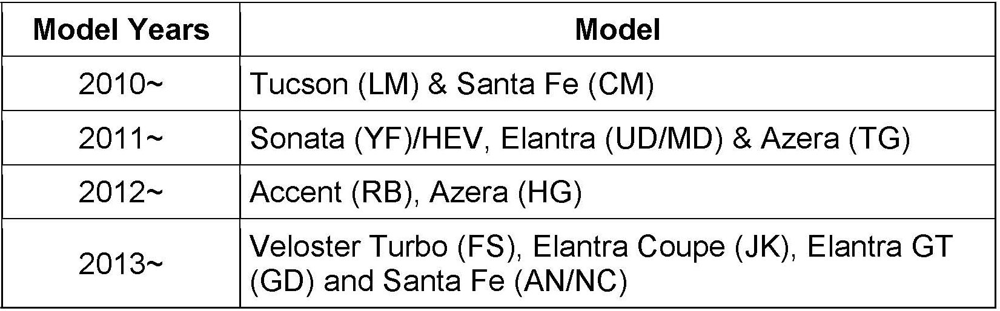
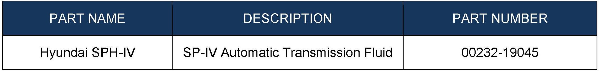
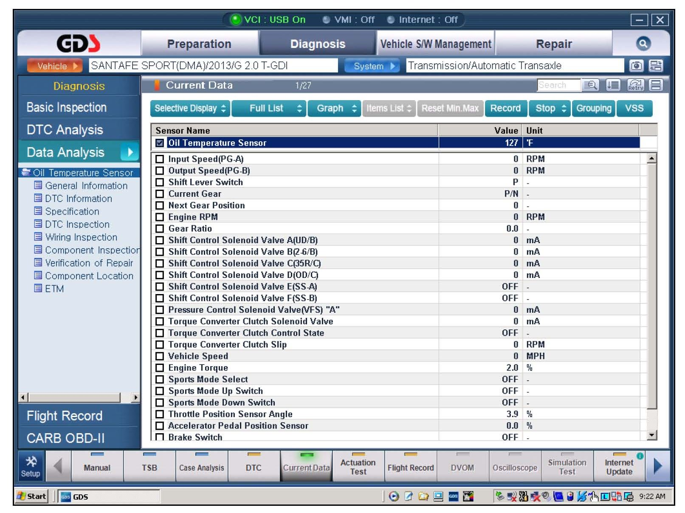
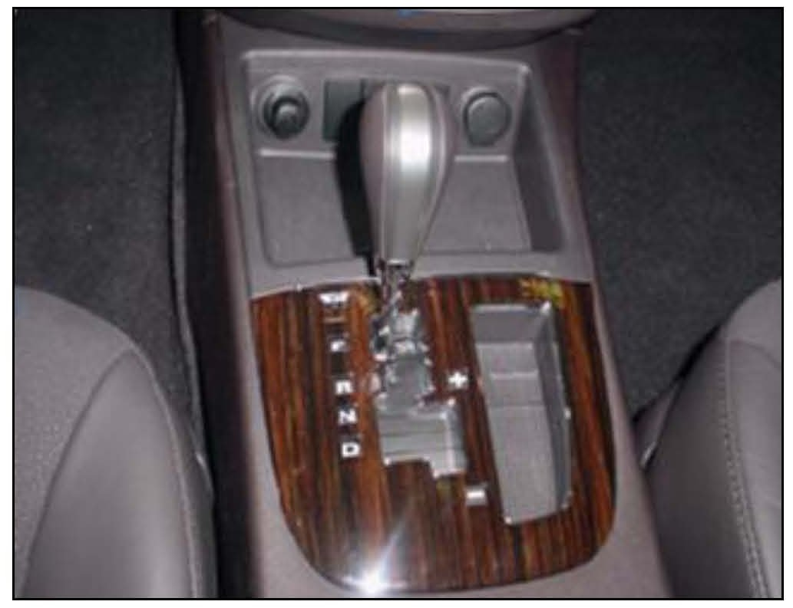
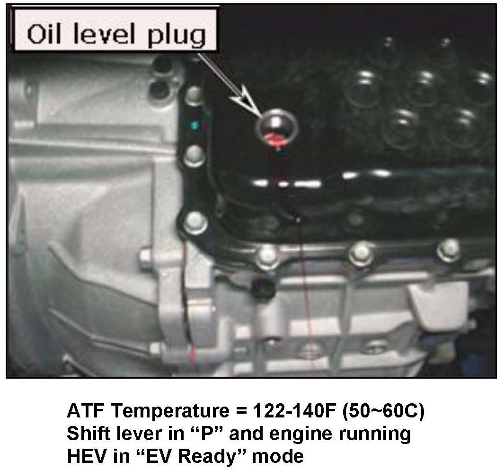
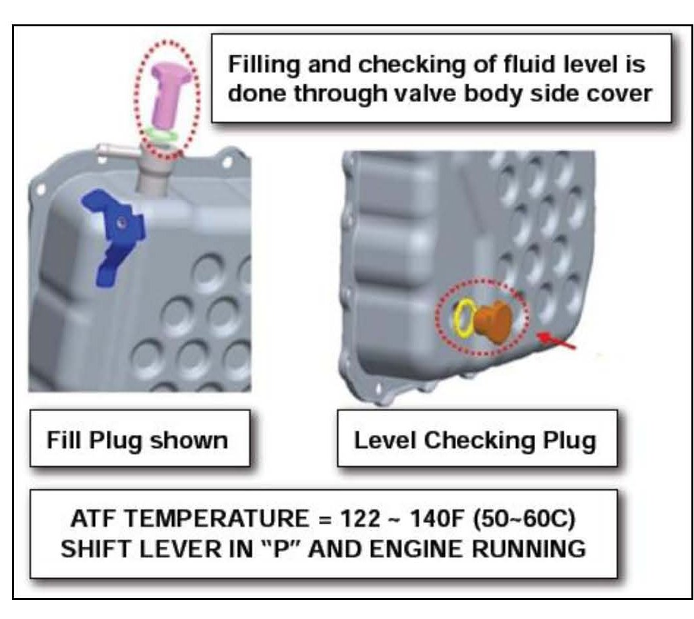

A/T (6 Speed) - ATF Fluid Level Checking Procedure
GROUPAUTOMATIC TRANSMISSION
DATE
MARCH 2013
NUMBER
13-AT-006
MODEL
Tucson (LM), Santa Fe (CM/AN/NC),
Sonata (YF/YF HEV), Elantra
(UD/MD/GD/JK), Accent (RB), Azera
(TG/HG), Veloster Turbo (FS)
SUBJECT:
AUTOMATIC TRANSAXLE (6-SPEED) ATF FLUID LEVEL CHECK
This TSB supersedes TSB 11-AT-004 to include 2013 models
Description:
The following vehicles are equipped with a 6-speed automatic transmission. The A/F level can be checked by the following procedure:

Applicable Vehicles:

PARTS INFORMATION:
WARRANTY INFORMATION:
Normal warranty applies
SERVICE PROCEDURE:
1. If the A/F has been completely drained, add approximately 5 quarts of SPH-IV A/F.

2. Attach a GDS and select:
^ Vehicle and A/T menu.
^ Current Data
^ Oil temperature sensor.
3. Drive the vehicle until the fluid temperature is at the low end of the range of 122 ~ 140°F (50 ~ 60°C).

4. Step on the brake and then shift into "R" "N" and "D" and back, pausing 2~3 seconds in each range. Repeat two times.
Move the shift lever to P, leave the engine running (Sonata Hybrid in "EV Ready mode) and lift the vehicle on a hoist.
5. Remove the splash shield under the transmission.

6. Remove the oil level plug. The oil level is correct if A/F flows out in a thin steady stream. If no oil flow occurs, go to Step 7.

7. If no oil flow occurs, add SPH-IV A/F through the fill plug opening or use a suction gun to add ATF through the level checking plug. Reinstall the plug.
Start the engine and shift to Park. When the ATF is 122°F ~ 140°F (50 ~ 60°C), remove the level checking plug. The level is correct when oil flows out of the level checking plug in a thin steady stream.
NOTE
Collect and dispose of any excess fluid in accordance with local regulation.
8. Reinstall the overflow plug and torque to specification.
Steel pan: Torque: 25 ~ 32 lb-ft (3.5 ~ 4.5 kgf.m) Plastic pan: Turn plug past detent.